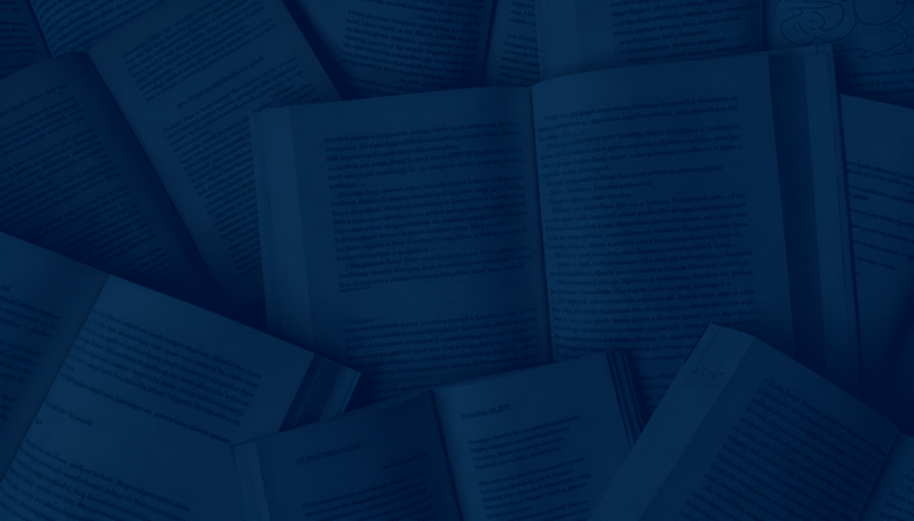
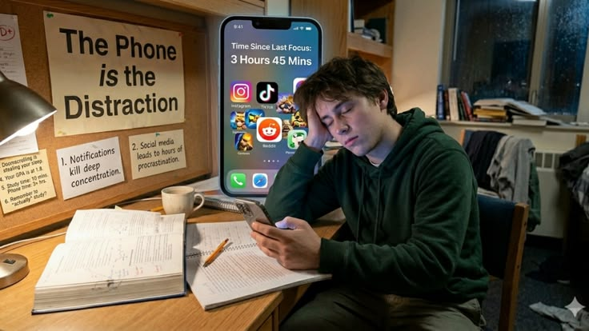

A Notícia
O Instituto de Pesquisa Econômica Aplicada (IPEA) publicou, em novembro de 2026, um artigo que discute as mudanças nos hábitos de leitura da população brasileira. Com o título A disputa pela atenção e a queda da leitura de livros no Brasil, o estudo apresenta uma reflexão sobre como celulares, redes sociais e outras plataformas digitais disputam o tempo e a atenção das pessoas. De acordo com o artigo, o Brasil apresenta um cenário curioso: os brasileiros continuam lendo diariamente, principalmente em ambientes digitais, mas dedicam cada vez menos tempo à leitura de livros. O texto destaca que notificações, vídeos curtos, mensagens e redes sociais podem interromper a concentração durante a leitura. Além disso, aponta que 68% das pessoas que já leram livros digitais afirmaram interromper mais a leitura para verificar mensagens do que quando leem livros impressos. Entretanto, o artigo também mostra que a internet pode funcionar como um espaço de divulgação literária. Contos, crônicas, poesias e romances circulam em redes sociais, sites e aplicativos de mensagens, aproximando diferentes públicos da literatura. O debate apresentado pelo IPEA mostra que o desafio não está simplesmente em escolher entre livros impressos e telas, mas em desenvolver hábitos de leitura que favoreçam a concentração, a compreensão e a reflexão.
Por que essa notícia importa?
Ela mostra que a maneira de ler está mudando. Mesmo com novas formas de comunicação, compreender textos, interpretar informações e desenvolver o pensamento crítico continuam sendo habilidades fundamentais.
Publicada em 09/11/2026 pelo Instituto de Pesquisa Econômica Aplicada (IPEA).